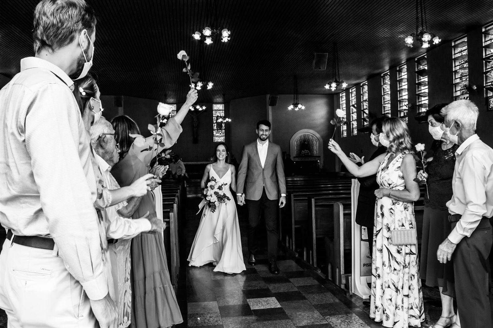

Renato Guerra · Fotografia
Histórias que merecem ser lembradas.
Fotografia profissional de casamentos, bodas, batizados e celebrações religiosas — registros naturais que guardam a emoção do jeito que ela aconteceu.
Os melhores registros são os que ninguém posa. É o riso, o abraço apertado, a lágrima disfarçada — a vida acontecendo na sua frente.
O trabalho do Renato Guerra nasce da observação: luz natural, emoção verdadeira e um olhar atento para os detalhes que passam despercebidos — mas que, anos depois, serão a memória mais valiosa.
Especialidades
Cada celebração, um olhar próprio
Histórias
Cada trabalho é uma história inteira
Não são só fotos soltas: é a preparação, a cerimônia, a festa, os encontros. Veja duas histórias recentes registradas pelo Renato.
Como funciona
Do primeiro contato à entrega
Conversa
Você conta a data, o tipo de celebração e o que imagina para o seu registro.
Planejamento
Alinhamos os detalhes do dia — horários, locais e os momentos que não podem faltar.
Registro
No grande dia, o Renato acompanha tudo com discrição, capturando a emoção conforme ela acontece.
Entrega
As fotografias são tratadas individualmente e organizadas para você reviver a história.
Sobre
Um olhar que respeita o momento
Renato Guerra é fotógrafo profissional com trabalho consolidado em casamentos, bodas, batizados e celebrações religiosas — além de projetos comerciais para marcas de cosméticos e joalheria.
Sua fotografia é guiada pela luz natural e pela emoção real: nada de rigidez, nada de encenação. O resultado são imagens espontâneas, íntimas e atemporais — o tipo de registro que a família vai revisitrar por gerações.
Do primeiro contato à entrega, você tem atenção pessoal em cada etapa: cada história é única e merece um olhar único.
Renato Guerra
Depoimentos
Quem viveu, recomenda
Quer saber como é ter o Renato registrando o seu grande dia? Fale direto com ele e peça referências de quem já viveu essa experiência.Fale com o Renato
Os depoimentos de clientes estão sendo reunidos para esta seção. Enquanto isso, o portfólio completo está aberto para você conhecer o trabalho de perto.Ver portfólio
Perguntas frequentes
Tudo o que você precisa saber
Como funciona o orçamento?
Cada trabalho é único. Pelo formulário ou pelo WhatsApp, você conta a data, o tipo de celebração e o que imagina — e recebe uma proposta sob medida para o seu dia.
Com quanto tempo de antecedência devo reservar?
Quanto antes, melhor — especialmente para casamentos em datas concorridas, quando a agenda preenche com meses de antecedência. Consulte a disponibilidade da sua data sem compromisso.
Você atende outras cidades?
Sim — atendimentos fora da cidade de origem podem ser combinados diretamente na conversa do orçamento, de acordo com a logística do seu evento.
Que tipos de trabalho você realiza?
Casamentos, bodas, batizados e celebrações religiosas, além de fotografia comercial e de produto para marcas. Cada categoria tem seu próprio olhar e abordagem.
Como são as fotografias de casamento?
O registro é documental e discreto: a cerimônia, os convidados, os detalhes e as emoções são capturados conforme acontecem, com luz natural — sem interromper o seu dia.
Como recebo as fotografias?
As fotografias passam por tratamento individual e são organizadas para você reviver cada momento. Os detalhes de entrega e formatos são combinados no momento da contratação.
Vamos conversar
Sua história merece ser contada do jeito que ela acontece.
Consulte a disponibilidade da sua data e receba uma proposta sob medida — sem compromisso.
Contato
Solicite seu orçamento
Conte um pouco sobre o seu dia: data, tipo de celebração e cidade. Quanto mais detalhes, mais precisa será a proposta.
- Resposta pessoal do Renato — cada mensagem é lida com atenção.
- Orçamentos sem compromisso, com proposta sob medida.
- Atendimento para casamentos, bodas, batizados, celebrações religiosas e projetos comerciais.